X17¶
1st NAPOLEON POINT
first_napoleon_point(A, B, C) -> X_17 • Kiepert • Napoleon • Kimberling X(17) • Search Value \((6, 9, 13)\): \(- \frac{20192 \sqrt{35}}{16041} + \frac{81811 \sqrt{3}}{16041} \approx 1.386654550070\)
X17 (1st NAPOLEON POINT) constructed at X17 = \(\left(\frac{192941}{29635} - \frac{8736 \sqrt{3}}{29635},\; \frac{189 \sqrt{3}}{29635} + \frac{23520}{5927}\right)\) in exact algebraic coordinates on the Heronian reference triangle \((a, b, c) = (15, 13, 14)\) over \(\mathbb{Q}(\sqrt{3})\) with vertices A = \((0, 0)\), B = \((14, 0)\), C = \((5, 12)\), and area \(\Delta = 84\). Switch tabs above to inspect exact constructions on Right \((3, 4, 5)\), Kepler \((1, \sqrt{\phi}, \phi)\), and Kimberling \((6, 9, 13)\).¶
Constructed Elements
Outward Equilateral Side Triangles: △BCA', △CAB', △ABC' erected outward on sidelines with apexes A', B', C'
Derived Triangle: Outer Napoleon Triangle △NapaNapbNapc — vertices Napa, Napb, Napc (Equilateral triangle formed by centers of outward side equilateral triangles)
Concurrence Lines (Outer Cevians): A–Napa, B–Napb, C–Napc concurring at X17
Homogeneous Coordinates & Exact Invariants¶

Homogeneous Coordinates of X17 on Heronian \((15, 13, 14)\): orthogonal trilinear struts \((\alpha, \beta, \gamma)\) and signed barycentric sub-triangles \((\Delta_a, \Delta_b, \Delta_c)\).¶
Trilinear Coordinates (\(\alpha : \beta : \gamma = 3900 \sqrt{3} + 10023 : 3380 \sqrt{3} + 10905 : 3640 \sqrt{3} + 10335\)): Dropping orthogonal perpendiculars X17Ta, X17Tb, and X17Tc from X17 to sidelines BC, CA, and AB meets the sides at right-spread pedal feet Ta = \(\left(\frac{6963509}{740875} - \frac{80892 \sqrt{3}}{740875},\; \frac{107856 \sqrt{3}}{740875} + \frac{4544988}{740875}\right)\), Tb = \(\left(\frac{2375905}{1001663} - \frac{41412 \sqrt{3}}{1001663},\; \frac{5702172}{1001663} - \frac{496944 \sqrt{3}}{5008315}\right)\), and Tc = \(\left(\frac{192941}{29635} - \frac{8736 \sqrt{3}}{29635},\; 0\right)\). The orthogonal strut lengths on \((15, 13, 14)\) are \(d_a = \frac{34377 \sqrt{3}}{148175} + \frac{534996}{148175}\), \(d_b = \frac{1727292}{385255} - \frac{105777 \sqrt{3}}{385255}\), and \(d_c = \frac{189 \sqrt{3}}{29635} + \frac{23520}{5927}\), reducing to homogeneous trilinears \(\alpha : \beta : \gamma = 3900 \sqrt{3} + 10023 : 3380 \sqrt{3} + 10905 : 3640 \sqrt{3} + 10335\).
Barycentric Coordinates (\(u : v : w = 900 \sqrt{3} + 2313 : 676 \sqrt{3} + 2181 : 784 \sqrt{3} + 2226\)): Joining X17 to the vertices along X17A, X17B, and X17C forms signed sub-triangles △X17BC, △X17CA, and △X17AB of exact signed areas \(\Delta_a = \frac{103131 \sqrt{3}}{59270} + \frac{802494}{29635}\), \(\Delta_b = \frac{863646}{29635} - \frac{105777 \sqrt{3}}{59270}\), and \(\Delta_c = \frac{1323 \sqrt{3}}{29635} + \frac{164640}{5927}\) (summing to \(\Delta_a + \Delta_b + \Delta_c = 84 = \Delta\)), in homogeneous ratio \(u : v : w = 900 \sqrt{3} + 2313 : 676 \sqrt{3} + 2181 : 784 \sqrt{3} + 2226\).
Reference Triangle |
Field |
Cartesian \((x, y)\) |
Trilinears \(\alpha : \beta : \gamma\) |
Barycentrics \(u : v : w\) |
Sub-Areas \((\Delta_a, \Delta_b, \Delta_c)\) |
Directed Trilinear \((d_a,\, Q_a)\) |
|---|---|---|---|---|---|---|
Heronian \((15, 13, 14)\) |
\(\mathbb{Q}(\sqrt{3})\) |
\(\left(\frac{192941}{29635} - \frac{8736 \sqrt{3}}{29635},\; \frac{189 \sqrt{3}}{29635} + \frac{23520}{5927}\right)\) |
\(3900 \sqrt{3} + 10023 : 3380 \sqrt{3} + 10905 : 3640 \sqrt{3} + 10335\) |
\(900 \sqrt{3} + 2313 : 676 \sqrt{3} + 2181 : 784 \sqrt{3} + 2226\) |
\(\left(\frac{103131 \sqrt{3}}{59270} + \frac{802494}{29635},\; \frac{863646}{29635} - \frac{105777 \sqrt{3}}{59270},\; \frac{1323 \sqrt{3}}{29635} + \frac{164640}{5927}\right)\) |
\(\frac{34377 \sqrt{3}}{148175} + \frac{534996}{148175}\; (Q_a = \frac{36783114984 \sqrt{3}}{21955830625} + \frac{289766054403}{21955830625})\) |
Right \((3, 4, 5)\) |
\(\mathbb{Q}(\sqrt{3})\) |
\(\left(\frac{42 \sqrt{3}}{115} + \frac{1336}{575},\; \frac{24 \sqrt{3}}{115} + \frac{402}{575}\right)\) |
\(15 \sqrt{3} + 60 : 20 \sqrt{3} + 45 : 25 \sqrt{3} + 48\) |
\(9 \sqrt{3} + 36 : 16 \sqrt{3} + 36 : 25 \sqrt{3} + 48\) |
\(\left(\frac{297}{115} - \frac{72 \sqrt{3}}{115},\; \frac{12 \sqrt{3}}{115} + \frac{192}{115},\; \frac{12 \sqrt{3}}{23} + \frac{201}{115}\right)\) |
\(\frac{198}{115} - \frac{48 \sqrt{3}}{115}\; (Q_a = \frac{46116}{13225} - \frac{19008 \sqrt{3}}{13225})\) |
Kepler \((1, \sqrt{\phi}, \phi)\) |
\(\mathbb{Q}(\sqrt{\phi}, \sqrt{3})\) |
\(\left(\frac{\sqrt{3} \left(- 3 \sqrt{2} \sqrt{1 + \sqrt{5}} + 12 \sqrt{10} \sqrt{1 + \sqrt{5}}\right)}{632} + \frac{75 \sqrt{5}}{632} + \frac{317}{632},\; - \frac{37 \sqrt{2} \sqrt{1 + \sqrt{5}}}{316} + \sqrt{3} \left(\frac{17}{632} + \frac{11 \sqrt{5}}{632}\right) + \frac{59 \sqrt{10} \sqrt{1 + \sqrt{5}}}{632}\right)\) |
\(\frac{3}{2} + \frac{\sqrt{6} \sqrt{1 + \sqrt{5}}}{2} + \frac{3 \sqrt{5}}{2} : \sqrt{3} \phi + \frac{3 \sqrt{2} \sqrt{1 + \sqrt{5}}}{2} : \frac{\sqrt{3} \left(\sqrt{2} \sqrt{1 + \sqrt{5}} + \sqrt{10} \sqrt{1 + \sqrt{5}}\right)}{4} + 4\) |
\(\frac{3}{2} + \frac{\sqrt{6} \sqrt{1 + \sqrt{5}}}{2} + \frac{3 \sqrt{5}}{2} : \frac{3}{2} + \frac{3 \sqrt{5}}{2} + \frac{\sqrt{3} \left(\sqrt{2} \sqrt{1 + \sqrt{5}} + \sqrt{10} \sqrt{1 + \sqrt{5}}\right)}{4} : 2 + 2 \sqrt{5} + \frac{\sqrt{3} \left(\sqrt{10} \sqrt{1 + \sqrt{5}} + 3 \sqrt{2} \sqrt{1 + \sqrt{5}}\right)}{4}\) |
\(\left(\sqrt{3} \left(- \frac{27 \sqrt{5}}{1264} - \frac{13}{1264}\right) + \frac{3 \sqrt{10} \sqrt{1 + \sqrt{5}}}{632} + \frac{117 \sqrt{2} \sqrt{1 + \sqrt{5}}}{1264},\; \frac{3 \sqrt{10} \sqrt{1 + \sqrt{5}}}{2528} + \sqrt{3} \left(- \frac{23}{1264} + \frac{13 \sqrt{5}}{1264}\right) + \frac{177 \sqrt{2} \sqrt{1 + \sqrt{5}}}{2528},\; - \frac{15 \sqrt{10} \sqrt{1 + \sqrt{5}}}{2528} + \sqrt{3} \left(\frac{7 \sqrt{5}}{632} + \frac{9}{316}\right) + \frac{221 \sqrt{2} \sqrt{1 + \sqrt{5}}}{2528}\right)\) |
\(\sqrt{3} \left(- \frac{27 \sqrt{5}}{632} - \frac{13}{632}\right) + \frac{3 \sqrt{10} \sqrt{1 + \sqrt{5}}}{316} + \frac{117 \sqrt{2} \sqrt{1 + \sqrt{5}}}{632}\; (Q_a = \frac{\sqrt{3} \left(- 3237 \sqrt{10} \sqrt{1 + \sqrt{5}} - 2331 \sqrt{2} \sqrt{1 + \sqrt{5}}\right)}{199712} + \frac{13305}{99856} + \frac{8163 \sqrt{5}}{99856})\) |
Kimberling \((6, 9, 13)\) |
\(\mathbb{Q}(\sqrt{3}, \sqrt{35})\) |
\(\left(\frac{1579094}{69511} - \frac{7740 \sqrt{105}}{5347},\; \frac{647 \sqrt{3}}{5347} + \frac{22924 \sqrt{35}}{69511}\right)\) |
\(2808 \sqrt{105} + 49803 : 25597 + 4212 \sqrt{105} : 60093 + 6084 \sqrt{105}\) |
\(144 \sqrt{105} + 2554 : 1969 + 324 \sqrt{105} : 6677 + 676 \sqrt{105}\) |
\(\left(- \frac{20192 \sqrt{35}}{5347} + \frac{81811 \sqrt{3}}{5347},\; - \frac{172033 \sqrt{3}}{10694} + \frac{30118 \sqrt{35}}{5347},\; \frac{8411 \sqrt{3}}{10694} + \frac{11462 \sqrt{35}}{5347}\right)\) |
\(- \frac{20192 \sqrt{35}}{16041} + \frac{81811 \sqrt{3}}{16041}\; (Q_a = \frac{34349209403}{257313681} - \frac{3303855424 \sqrt{105}}{257313681})\) |
Alternate Coordinates1 form
Trilinears: \(\sec(A - \pi /3) : \sec(B - \pi /3) : \sec(C - \pi /3)\)
Incident Central Lines¶

Principal Central Lines Through X17 on Heronian \((15, 13, 14)\).¶
Circumcenter–1st ISOGONIC CENTER Central Line {3, 13, 17} — collinear axis through X3 (Circumcenter, \(\left(7,\; \frac{33}{8}\right)\)), X13 (1st ISOGONIC CENTER, \(\left(\frac{13727}{2353} - \frac{224 \sqrt{3}}{2353},\; \frac{18816}{2353} - \frac{5523 \sqrt{3}}{2353}\right)\)), X17, with exact Cartesian equation \(x \left(- \frac{72879}{18824} + \frac{5523 \sqrt{3}}{2353}\right) + y \left(- \frac{2744}{2353} - \frac{224 \sqrt{3}}{2353}\right) - \frac{37737 \sqrt{3}}{2353} + \frac{600705}{18824} = 0\) (spread \(\frac{1319724365409}{2626018592353} - \frac{730438926336 \sqrt{3}}{2626018592353}\) relative to AB).
Orthocenter–1st ISODYNAMIC POINT Central Line {4, 15, 17} — collinear axis through X4 (Orthocenter, \(\left(5,\; \frac{15}{4}\right)\)), X15 (1st ISODYNAMIC POINT, \(\left(- \frac{99169}{2353} + \frac{65856 \sqrt{3}}{2353},\; - \frac{2352}{2353} + \frac{6867 \sqrt{3}}{2353}\right)\)), X17, with exact Cartesian equation \(x \left(- \frac{44703}{9412} + \frac{6867 \sqrt{3}}{2353}\right) + y \left(\frac{110934}{2353} - \frac{65856 \sqrt{3}}{2353}\right) - \frac{1440495}{9412} + \frac{212625 \sqrt{3}}{2353} = 0\) (spread \(\frac{382588416 \sqrt{3}}{33501282217} + \frac{1011192681}{33501282217}\) relative to AB).
Nine-Point Center–2nd ISOGONIC CENTER Central Line {5, 14, 17} — collinear axis through X5 (Nine-Point Center, \(\left(6,\; \frac{63}{16}\right)\)), X14 (2nd ISOGONIC CENTER, \(\left(\frac{224 \sqrt{3}}{2353} + \frac{13727}{2353},\; \frac{5523 \sqrt{3}}{2353} + \frac{18816}{2353}\right)\)), X17, with exact Cartesian equation \(x \left(\frac{152817}{37648} + \frac{5523 \sqrt{3}}{2353}\right) + y \left(\frac{391}{2353} - \frac{224 \sqrt{3}}{2353}\right) - \frac{941535}{37648} - \frac{32256 \sqrt{3}}{2353} = 0\) (spread \(\frac{757783240704 \sqrt{3}}{2626018592353} + \frac{1313499452769}{2626018592353}\) relative to AB).
Napoleon Line {6, 17, 18} — collinear axis through X6 (Symmedian Point, \(\left(\frac{1673}{295},\; \frac{1176}{295}\right)\)), X17, X18 (2nd NAPOLEON POINT, \(\left(\frac{8736 \sqrt{3}}{29635} + \frac{192941}{29635},\; \frac{23520}{5927} - \frac{189 \sqrt{3}}{29635}\right)\)), with exact Cartesian equation \(x \left(\frac{189 \sqrt{3}}{29635} + \frac{31752}{1748465}\right) + y \left(\frac{8736 \sqrt{3}}{29635} + \frac{1467648}{1748465}\right) - \frac{30153816}{8742325} - \frac{179487 \sqrt{3}}{148175} = 0\) (spread \(\frac{81}{173137}\) relative to AB).
X17 lies on the Napoleon cubic.
Functional Relations & Conjugates¶
Conjugate & Homothetic Partners of X17 on Heronian \((15, 13, 14)\).¶
Isogonal Conjugate: X61 (Isogonal Conjugate Of X17, homogeneous barycentrics \(375 + 900 \sqrt{3} : 507 + 676 \sqrt{3} : 462 + 784 \sqrt{3}\)) at \(\left(\frac{21952 \sqrt{3}}{77617} + \frac{427679}{77617},\; \frac{2289 \sqrt{3}}{77617} + \frac{308112}{77617}\right)\), joined along {17, 61} (isogonal conjugate via \(a^2 vw : b^2 wu : c^2 uv\)).
Isotomic Conjugate: X302 (ISOTOMIC CONJUGATE OF 1st NAPOLEON POINT, homogeneous barycentrics \(70 + 168 \sqrt{3} : 126 + 168 \sqrt{3} : 99 + 168 \sqrt{3}\)) at \(\left(\frac{196896 \sqrt{3}}{675023} + \frac{4159899}{675023},\; \frac{4032 \sqrt{3}}{675023} + \frac{2697732}{675023}\right)\), joined along {17, 302} (isotomic conjugate via \(vw : wu : uv\)).
Complement: exact algebraic point at \(\left(\frac{4368 \sqrt{3}}{29635} + \frac{185062}{29635},\; \frac{23802}{5927} - \frac{189 \sqrt{3}}{59270}\right)\) (homogeneous barycentrics \(1460 \sqrt{3} + 4407 : 1684 \sqrt{3} + 4539 : 1576 \sqrt{3} + 4494\)) — complement of X17 dilated from X2 by factor \(-\frac{1}{2}\).
Anticomplement: exact algebraic point at \(\left(\frac{17472 \sqrt{3}}{29635} + \frac{177183}{29635},\; \frac{24084}{5927} - \frac{378 \sqrt{3}}{29635}\right)\) (homogeneous barycentrics \(280 \sqrt{3} + 1047 : 504 \sqrt{3} + 1179 : 396 \sqrt{3} + 1134\)) — anticomplement of X17 dilated from X2 by factor \(-2\).
Circumcircle Inverse: Inversion in circumcircle centered at X3 = \(\left(7, \frac{33}{8}\right)\) (\(Q_R = \frac{4225}{64}\)) maps X17 along {3, 17} (\(Q(X17, X3) = \frac{1006633257 \sqrt{3}}{3512932900} + \frac{29503775113}{56206926400}\), scale \(Q_R / Q = \frac{239718172793125}{202001430181} - \frac{130862323410000 \sqrt{3}}{202001430181}\)) to exact algebraic point at \(\left(- \frac{6618890460000 \sqrt{3}}{202001430181} - \frac{179801571733}{202001430181},\; - \frac{39238956894144}{202001430181} + \frac{22037470489125 \sqrt{3}}{202001430181}\right)\) (homogeneous barycentrics \(18535451008500 - 5662407089625 \sqrt{3} : 9239865029044 - 9029239903125 \sqrt{3} : -26159304596096 + 14691646992750 \sqrt{3}\)) .
Quadratic :math:`sqrt{3}` Conjugate: Conjugation \(\sqrt{3} \mapsto -\sqrt{3}\) over \(\mathbb{Q}(\sqrt{3})\) maps X17 (outward/inward equilateral orientation reversal) directly to X18 (2nd NAPOLEON POINT) at \(\left(\frac{8736 \sqrt{3}}{29635} + \frac{192941}{29635},\; \frac{23520}{5927} - \frac{189 \sqrt{3}}{29635}\right)\), joined along {17, 18}.
Full Functional Relations Catalog15 relations
X17 = isogonal conjugate of X61
X17 = isotomic conjugate of X302
X17 = complement of X627
X17 = anticomplement of X629
X17 = circumcircle-inverse of X32627
X17 = Xi-cross conjugate of Xj for these (i,j): (16, 14), (140, 18), (397, 4)
X17 = trilinear product of vertices of outer Napoleon triangle
X17 = trilinear pole of line X523X14446
X17 = X63-isoconjugate of X10642
Four-Triangle Symbolic Invariance¶

Four-Triangle Invariance of X17 across Heronian (15, 13, 14), Right (3, 4, 5), Kepler (1, √φ, φ), and Kimberling (6, 9, 13).¶
Across the four canonical algebraic number fields — Heronian (15, 13, 14) over \(\mathbb{Q}(\sqrt{3})\) (\(X17 = \left(\frac{192941}{29635} - \frac{8736 \sqrt{3}}{29635},\; \frac{189 \sqrt{3}}{29635} + \frac{23520}{5927}\right)\)), Right (3, 4, 5) over \(\mathbb{Q}(\sqrt{3})\) (\(X17 = \left(\frac{42 \sqrt{3}}{115} + \frac{1336}{575},\; \frac{24 \sqrt{3}}{115} + \frac{402}{575}\right)\)), Kepler (1, √φ, φ) over \(\mathbb{Q}(\sqrt{\phi}, \sqrt{3})\), and Kimberling (6, 9, 13) over \(\mathbb{Q}(\sqrt{3}, \sqrt{35})\) (\(X17 = \left(\frac{1579094}{69511} - \frac{7740 \sqrt{105}}{5347},\; \frac{647 \sqrt{3}}{5347} + \frac{22924 \sqrt{35}}{69511}\right)\)) — X17 remains strictly interior (\(\Delta_a, \Delta_b, \Delta_c > 0\)) across all four acute, Pythagorean right, golden right, and obtuse scalene triangles, preserving its exact homogeneous law \(u : v : w\) without floating-point approximation.
Related Collection 1 Topic Guides
T_13: The Isogonic & Napoleon Central Lines • T_24: Equilateral, Isogonic & Napoleon Triangles
Notes¶
John Rigby, “Napoleon revisited,” Journal of Geometry,33 (1988) 126-146.